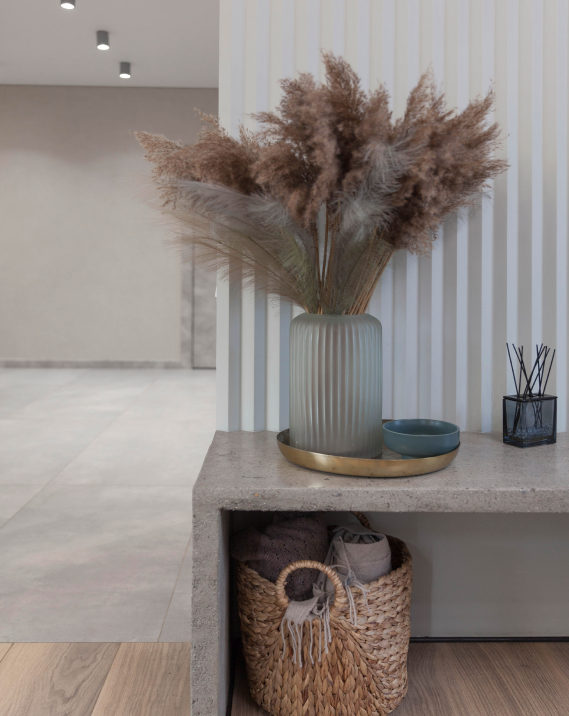
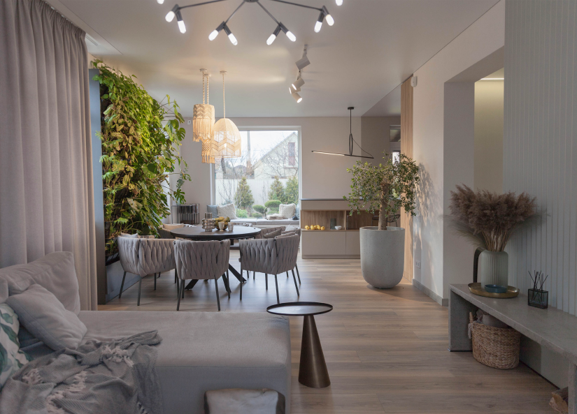
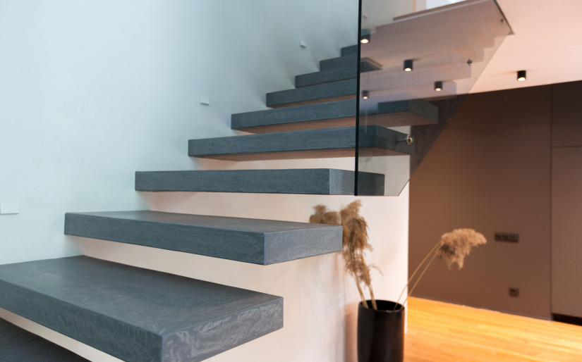

<section class="find section__find">
  <div class="container find-container">
    <h2 class="title find__title">We find beauty around and complete it</h2>
    <div class="find-wrapper">
      <div class="find-wrapper__content">
        <div class="find__item-text">
          <p>
            <span class="find__item-span">In</span> rejecting the notion of a signature or house style, we foster a
            sense of natural inquisitiveness. Together we continue to learn and
            evolve our aesthetic so that it remains relevant through constant
            reinvention. We believe that good design should have a
            responsibility to the world it inhabits. We respect the nature and
            create projects in collaboration with it.

          </p>
          <br>
          <p>Choosing reclaimed wood,
            eco-friendly paint and natural materials: stone, clay, copper, flax,
            wood where possible. We don`t process the textures it`s a thing to
            look at and also feel the warmth of wood or light coldness of stone.
            Art plays a central role in our interiors. </p> <br>
          <p>That's why we are
            creating spaces imbued with individuality and creativity. We find
            beauty around and complete it.</p>
        </div>
        
      </div>
      <div class="find-wrapper__content">
        
        <div class="find__item-text">
          <p>
            <span class="find__item-span">Our</span> clients - they are mad in love with beauty, design, art as we are.
            They inspire us with shining eyes and a desire to change. And we inspire them. <br>
          </p>
          <br>
          <p>
            We are open the frank with our clients and give them a true and clear idea of the work process and product.
            We believe in listening and working with our clients to drive the best design solutions. Our shared desire
            to explore new territories means that we love to work collaboratively and create experiences via exceptional
            spaces.</p>
        </div>
        
      </div>
      <div class="find-wrapper__content">

        <div class="find__item-text">
          <p>
            <span class="find__item-span"> We</span> are open the frank with our clients and give them a true and clear
            idea of the work process and product.
          </p>
          <br>
          <p> We believe in listening and working with our clients to drive the best design solutions. Our shared desire
            to explore new territories means that we love to work collaboratively and create experiences via exceptional
            spaces.</p>
        </div>

        
      </div>
    </div>
  </div>
</section>